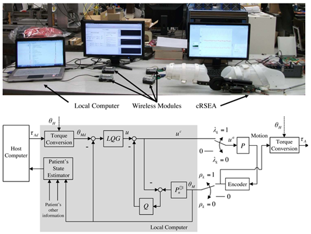
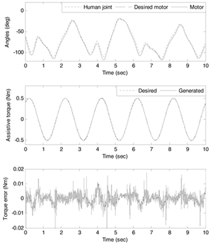

<!DOCTYPE html PUBLIC "-//W3C//DTD XHTML 1.0 Transitional//EN" "http://www.w3.org/TR/xhtml1/DTD/xhtml1-transitional.dtd">
<html xmlns="http://www.w3.org/1999/xhtml" lang="en" xml:lang="en">
<head>
	<meta http-equiv="content-type" content="text/html; charset=utf-8" />
	<meta name="description" content="MSC Lab Homepage" />
	<meta name="keywords" content="mechanical,systems,control" />
	<meta name="author" content="Raechel Tan" />
    <link rel="icon" href="../../../mscicon.ico" />
    <link href='http://fonts.googleapis.com/css?family=PT+Sans|Brawler' rel='stylesheet' type='text/css' />
	<link rel="stylesheet" type="text/css" href="../../../style.css" media="all" />
	<title>MSC Lab - Control of the cRSEA over Wireless Network</title>
</head>

<body>
<div id="container980"><!-- Use"containerfull" for 100% width. For fixed width, use "container980", "container760" or "container600" (the number is the layout width in pixels). -->
	<div id="header">
    	
	</div>
	<div id="menu"> 
		<ul>     
			<li><a href="../../../index.html">Home</a></li>
			<li><a href="../../../people.html">People</a>
            	<ul>
                	<li><a href="../../../people/tomizuka.html">Prof. Masayoshi Tomizuka</a></li>
                    <li><a href="../../../people/students.html">Students</a></li>
                    <li><a href="../../../people/visitors.html">Visitors</a></li>
                    <li><a href="../../../people/alumni.html">Alumni</a></li>
                    <li><a href="../../../people/prev_visitors.html">Previous Visitors</a></li>
                </ul>
            </li>
			<li><a class="current" href="../../../research.html">Research</a>
            	<ul>
                	<li><a href="../../robotics.html">Robotics</a></li>
                    <li><a href="../../human.html">Human Mechatronics</a></li>
                    <li><a href="../../disk.html">Hard Disk Drive Control</a></li>
                    <li><a href="../../precision.html">Precision Motion Control</a></li>
                    <li><a href="../../automotive.html">Automotive Control Systems</a></li>
                    <li><a href="file:///C|/Users/Raechel 2/Dropbox/research.html">more...</a></li>
                </ul>
            </li>
            <li><a href="../../../publications.html">Publications</a>
            	<ul>
                	<li><a href="../../../publications/papers_robotics.html">Robotics</a></li>
                    <li><a href="../../../publications/papers_human.html">Human Mechatronics</a></li>
                    <li><a href="../../../publications/papers_disk.html">Hard Disk Drive Control</a></li>
                    <li><a href="../../../publications/papers_precision.html">Precision Motion Control</a></li>
                    <li><a href="../../../publications/papers_automotive.html">Automotive Control Systems</a></li>
                    <li><a href="../../../publications.html">more...</a></li>
                </ul>
            </li>
            <li><a href="../../../resources.html">Resources</a>
            	<ul>
                	<li><a href="../../../resources/news.html">News and Announcements</a></li>
                    <li><a href="../../../resources/network.html">Network and Printing</a></li>
                    <li><a href="../../../resources/courses.html">Prof. Tomizuka's Courses</a></li>
                    <li><a href="../../../resources/conferences.html">Upcoming Conferences</a></li>
                </ul>
            </li>
            <li><a href="../../../misc.html">Miscellaneous</a>
            	<ul>
                	<li><a href="../../../misc/logo.html">MSC Logo</a></li>
                    <li><a href="../../../misc.html">more...</a></li>
                </ul>
            </li>
            <li><a href="../../../contact.html">Contact Us</a></li>
		</ul>
	</div>

	<div id="main">
    	<div id="navtree">
			<p><a href="../../../research.html">Research</a> &gt; <a href="../human.html">Human Mechatronics</a> &gt; <a href="human_assist.html">Mechatronics for Human Assistance</a> &gt; <a href="human_assist_cRSEAwireless.html">Control of the cRSEA over Wireless Network</a></p>
		</div>
    
		<div id="content">
        	<div id="sidebar">
			<div class="sidebarbox">
               <h3>Contents:</h3>
				<ul class="sidemenu">
					<li><a href="#motivation">Motivation and Approach</a></li>
                    <li><a href="#results">Main Results</a></li>
                    <li><a href="#pub">Recent Key Publications</a></li>
				</ul>
			</div>
			</div>

          <h2>Control of the cRSEA over Wireless Network</h2>
		  <h3 id="motivation">Motivation and Approach</h3>
		  <p>In the NMAS, the cRSEA is controlled over a wireless network for improved mobility. However, wireless control is less reliable than wired control due to packet loss, time delay, and packet disorder caused by wireless communication. A Bernoulli random process was used to model the possible packet loss. A modied LQG control with a disturbance observer (DOB) was proposed to control the cRSEA under packet loss [1]. Under the situation when future references can be previewed, the preview control technique was extended so that the previewed reference signal can be used for improved tracking performance [2]. To deal with time-varying delays, a communication disturbance observer (CDOB) was investigated [3]. A wireless control system was built using WirelessHART protocol to test the performance of proposed controllers [4].</p>
		  <table width="100%" border="0">
		    <tr>
		      <td width="59%" align="center" valign="top"><p></p>
	          <p>(upper) Experimental setup of the wireless control system<br />
	            (lower) Block diagram of the modied LQG controller</p></td>
		      <td width="41%" align="center" valign="top"><p></p>
	          <p>Experimental results with 30% packet loss</p></td>
	        </tr>
	      </table>
		  <p>&nbsp;</p>
<h3 id="results">Main Results</h3>
		  <p>All the algorithms proposed above have been tested and veried by simulations and experiments. For packet loss compensation, experimental results of the modied LQG controller are shown in the figure above. For the control system with 30% packet loss, the proposed controller can still guarantee that accurate assistive torque would be generated [1, 4]. Modied preview control could improve the tracking performance with previewed reference signals if the preview time is long enough [2]. The proposed CDOB could guarantee the stability of the wireless tracking control system under varying and unknown time delays [3].</p>
		  <p>&nbsp;</p>
		  <h3 id="pub">Recent Key Publications</h3>
		  <ol>
		    <li>J. Bae, W. Zhang, and M. Tomizuka, &quot;Network-Based Rehabilitation System for Improved Mobility and Tele-Rehabilitation,&quot; <em>IEEE Transactions on Control Systems Technology</em>, to appear, 2013</li>
		    <li>W. Zhang, J. Bae, and M. Tomizuka, &quot;Modied Preview Control for a Wireless Tracking Control System with Packet Loss&quot;, in <em>Proceedings of 2012 ASME Dynamic System and Control Conference (DSCC)</em>, pp. 2524-2533, 2012 <strong>(Semi-Plenary Paper Award Finalist)</strong></li>
		    <li>W. Zhang and M. Tomizuka, &quot;Compensation of Time Delay in a Network-based Gait Rehabilitation System with a Discrete-time Communication Disturbance Observer,&quot; in <em>Proceedings of IFAC Symposium on Mechatronic Systems</em>, pp. 555-562, 2013.</li>
		    <li>W. Zhang, X. Zhu, S. Han, N. Byl, A. K. Mok, and M. Tomizuka, &quot;Design of a Network-based Mobile Gait Rehabilitation System,&quot; in <em>Proceedings of IEEE International Conference on Robotics and Biomimetics (ROBIO)</em>, pp. 1773-1778, 2012.</li>
	      </ol>
      </div>
		<div class="clear">&nbsp;</div>
	</div>

	<div id="credits">
		<p>&copy; 2015 Mechanical Systems Control Laboratory &nbsp;&nbsp; | &nbsp;&nbsp; <a href="mailto:dwai213@berkeley.edu" target="_blank">Contact the Webmaster</a></p>
	</div>
</div>
</body>
</html>